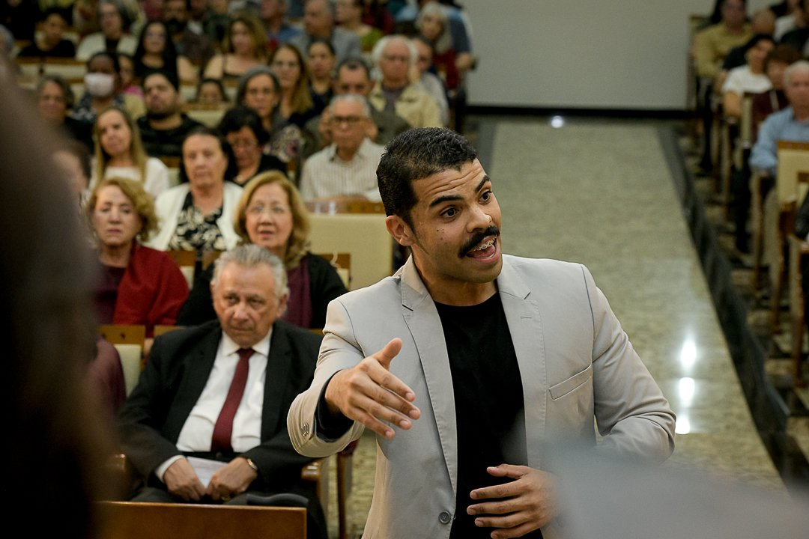
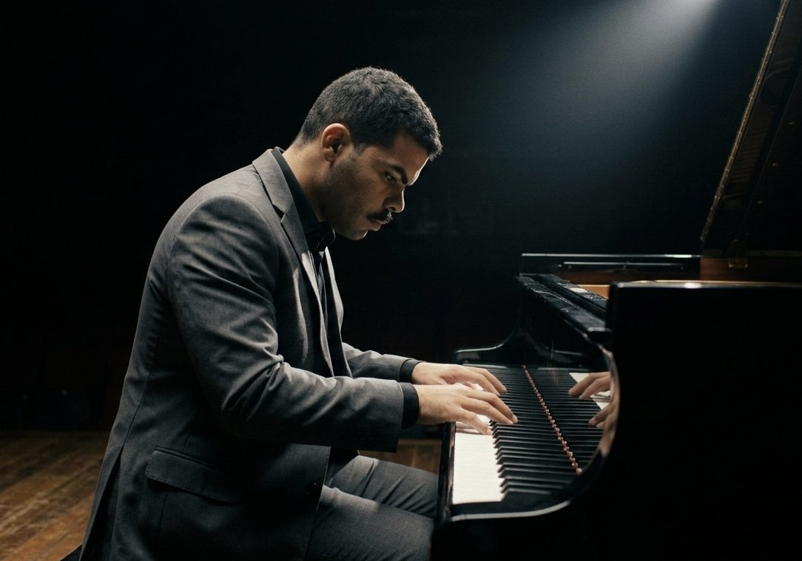
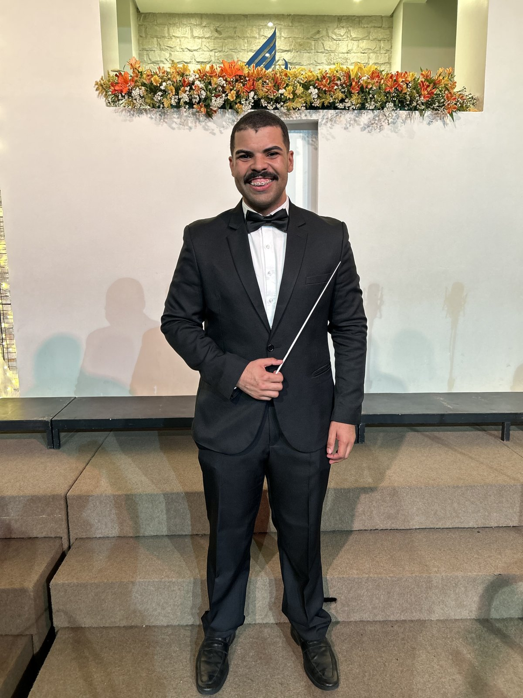

Quem sou eu
Regente, arranjador e educador musical, apaixonado pelo trabalho coral e pela formação de novos músicos em Brasília (DF).
Biografia

Sou apaixonado demais pelo que faço. Natural de Manaus, sou licenciado em Música pelo UNASP (2023) e bacharel em Jornalismo pela UFAM (2018), com estudos de Piano Popular e Violino. Atualmente, sou pós-graduando em Regência Coral com Capacitação para Docência pelo UNASP e aluno concluinte do curso técnico em Regência na Escola de Música de Brasília (EMB).
Vivaldi: As Quatro Estações, Primavera, 3º movimento

Entre 2019 e 2023, no UNASP-EC, participei da execução de obras como o Te Deum de Bruckner e as cantatas Psalmi 8 e Revelation do Dr. Samuel Krähenbühl, atuando como regente assistente do Coro Sinfônico nesta última, em 2022. Integrei o coral Academia da Voz, com quem gravei o projeto Academia Canta Arautos, atuei como pianista correpetidor do Coral Canção Jovem e pianista do coro de câmara Officina Vocalis, além de pianista da Orquestra Sinfônica Jovem e integrante da Banda Sinfônica Jovem do UNASP-EC.

Desde 2023, sou ministro de música na IASD Central de Taguatinga, em Brasília, onde atuo na regência do Coral Jovem de Taguatinga e do Coro de Câmara Viva Voz, na direção técnica do Ministério de Louvor e da área instrumental, além de instrutor de banda marcial do Clube de Desbravadores Ave Branca e professor de piano na Escola de Música Tutti Sonora. Na Escola de Música de Brasília, como aluno do curso de Regência, regi obras como o Credo da Missa Festiva de John Leavitt, o segundo movimento do Gloria de John Rutter e os segundo e terceiro movimentos da Primavera de Vivaldi, junto à Orquestra Sinfônica da escola.
Rutter: Gloria, II. Andante
Por que eu faço o que faço?
Desde que comecei a trabalhar como regente de coral, tive curiosidade em saber como fazer um kit de ensaio, e mais ainda, como funcionava um processo de gravação de qualquer coisa. No início do meu trabalho, tudo era de forma caseira pra mim: gravava com o gravador do meu telefone e o meu teclado, mandava os áudios via e-mail para o meu computador e editava usando o Sony Vegas.
Estudar Jornalismo e mexer com ferramentas de edição de áudio e vídeo na faculdade me ajudou demais nesse processo, mas só quando fui para a faculdade de Música e estudei Produção Musical, Arranjo, Composição, Regência, além de entender processos de produção, DAWs e montei meu home studio, entendi que podia produzir coisas de forma profissional.
Também foi na faculdade de Música que me apaixonei por ver uma partitura bem escrita, bem editada e bem diagramada. Nesse ínterim, durante uma das Semanas da Arte do curso de Música do UNASP, um palestrante disse a seguinte frase: "partitura engavetada não serve pra nada". Isso me tocou profundamente. Entendi que toda partitura não pode ser engavetada: precisa ser executada pelo máximo de pessoas. E pra que a música que está escrita ali seja bem executada, a partitura deve estar bem editada.
Foi a partir disso que decidi fazer tudo o que eu faço hoje. Procuro me esmerar ao máximo em tudo o que faço profissionalmente, seja num arranjo para grupo vocal, seja num arranjo instrumental, num kit de ensaio ou em qualquer outro produto. Meu lema principal, de trabalho e de vida, é o que está lá na Bíblia Sagrada: "todos os vossos atos sejam feitos com amor" (I Coríntios 16:14).
Currículo / Formação
- Licenciatura em Música — UNASP-EC (2023)
- Bacharelado em Jornalismo — UFAM (2018)
- Pós-graduação em Regência Coral com Capacitação para Docência — UNASP (em andamento)
- Curso técnico em Regência — Escola de Música de Brasília, EMB (concluinte)
- Piano Popular — profs. Israel Silva e Anderson Farias
- Violino — profs. Joquebede Souza e Sílvia Lima
- Regente assistente, Coro Sinfônico UNASP-EC (2022)
- Ministro de música, IASD Central de Taguatinga (desde 2023)